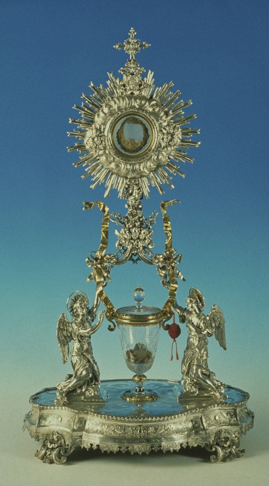

ACTA DEI
Mapa dos milagres
6 MILAGRES
✚ Passe o mouse (ou toque) numa cruz · clique para abrir
TODOS OS MILAGRES DO MAPA
Faverney, 1608: o ostensório que não caiu
Faverney, França · 25 a 27 de maio de 1608
A hóstia que não queimou: Amsterdã, 1345
Amsterdã, Países Baixos · 15 de março de 1345
As Hóstias de Siena, intactas desde 1730
Siena, Itália · 14 a 17 de agosto de 1730
O Milagre Eucarístico de Santarém
Santarém, Portugal · século XIII (c. 1247)
O Milagre de Bolsena e o Corporal de Orvieto
Bolsena e Orvieto, Itália · 1263

O Milagre Eucarístico de Lanciano
Lanciano, Itália · século VIII